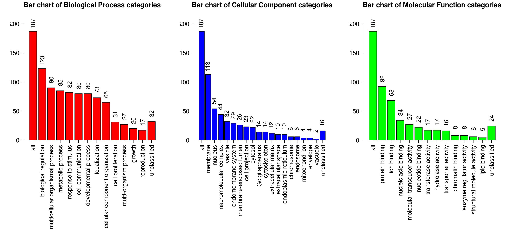

Summary (Result Download)
Enrich method: ORAOrganism:hsapiens
Enrichment Categories: geneontology_Biological_Process
Interesting gene list: a R object. ID type: genesymbol
The interesting gene list contains 204 user IDs in which 187 user IDs are unambiguously mapped to the unique Entrez Gene IDs and 17 user IDs are mapped to multiple Entrez Gene IDs or could not be mapped to any Entrez Gene ID. The GO Slim summary are based upon the 187 unique Entrez Gene IDs.
Among the 187 unique Entrez Gene IDs, 170 IDs are annotated to the selected functional categories and also in the reference gene list, which are used for the enrichment analysis.
Reference gene list: data/background_genes.txt ID type: genesymbol
The reference gene list contains 5000 IDs in which 4627 IDs are unambiguously mapped to the unique Entrez Gene IDs and 373 IDs are mapped to multiple Entrez Gene IDs or could not be mapped to any Entrez Gene ID.
Among the 4627 unique Entrez Gene IDs, 4020 IDs are annotated to the selected functional categories, which are used as the reference for the enrichment analysis.
Parameters for the enrichment analysis:
- Minimum number of Entrez Gene IDs in the category:4
- Maximum number of Entrez Gene IDs in the category:500
- FDR Method:BH
- Significance Level: FDR<0.05
Mapped User IDs
| userid | Gene Symbol | Gene Name | Entrez Gene |
|---|---|---|---|
| SNORD116-4 | SNORD116-4 | small nucleolar RNA, C/D box 116-4 | 100033416 |
| SNORD116-28 | SNORD116-28 | small nucleolar RNA, C/D box 116-28 | 100033820 |
| FAM196B | FAM196B | family with sequence similarity 196 member B | 100131897 |
| TMED7-TICAM2 | TMED7-TICAM2 | TMED7-TICAM2 readthrough | 100302736 |
| EDIL3 | EDIL3 | EGF like repeats and discoidin domains 3 | 10085 |
| TSPAN5 | TSPAN5 | tetraspanin 5 | 10098 |
| PLXNC1 | PLXNC1 | plexin C1 | 10154 |
| B3GALT5 | B3GALT5 | beta-1,3-galactosyltransferase 5 | 10317 |
| ADCY5 | ADCY5 | adenylate cyclase 5 | 111 |
| CHRM3 | CHRM3 | cholinergic receptor muscarinic 3 | 1131 |
| MED12L | MED12L | mediator complex subunit 12 like | 116931 |
| PARD3B | PARD3B | par-3 family cell polarity regulator beta | 117583 |
| ADD2 | ADD2 | adducin 2 | 119 |
| AK7 | AK7 | adenylate kinase 7 | 122481 |
| PLD4 | PLD4 | phospholipase D family member 4 | 122618 |
| CCR4 | CCR4 | C-C motif chemokine receptor 4 | 1233 |
| CCR8 | CCR8 | C-C motif chemokine receptor 8 | 1237 |
| TSHZ2 | TSHZ2 | teashirt zinc finger homeobox 2 | 128553 |
| COL8A1 | COL8A1 | collagen type VIII alpha 1 chain | 1295 |
| SPC24 | SPC24 | SPC24, NDC80 kinetochore complex component | 147841 |
| CKAP2L | CKAP2L | cytoskeleton associated protein 2 like | 150468 |
| CXADR | CXADR | coxsackie virus and adenovirus receptor | 1525 |
| NIPAL1 | NIPAL1 | NIPA like domain containing 1 | 152519 |
| RASEF | RASEF | RAS and EF-hand domain containing | 158158 |
| TRPV3 | TRPV3 | transient receptor potential cation channel subfamily V member 3 | 162514 |
| BHLHA15 | BHLHA15 | basic helix-loop-helix family member a15 | 168620 |
| ADAMTS15 | ADAMTS15 | ADAM metallopeptidase with thrombospondin type 1 motif 15 | 170689 |
| EGFR | EGFR | epidermal growth factor receptor | 1956 |
| MPZL3 | MPZL3 | myelin protein zero like 3 | 196264 |
| FAT2 | FAT2 | FAT atypical cadherin 2 | 2196 |
| PHACTR1 | PHACTR1 | phosphatase and actin regulator 1 | 221692 |
| THSD7A | THSD7A | thrombospondin type 1 domain containing 7A | 221981 |
| SCUBE3 | SCUBE3 | signal peptide, CUB domain and EGF like domain containing 3 | 222663 |
| ZSCAN23 | ZSCAN23 | zinc finger and SCAN domain containing 23 | 222696 |
| IKZF3 | IKZF3 | IKAROS family zinc finger 3 | 22806 |
| SHANK2 | SHANK2 | SH3 and multiple ankyrin repeat domains 2 | 22941 |
| IGSF9B | IGSF9B | immunoglobulin superfamily member 9B | 22997 |
| FOXC2 | FOXC2 | forkhead box C2 | 2303 |
| FLG | FLG | filaggrin | 2312 |
| FPR1 | FPR1 | formyl peptide receptor 1 | 2357 |
| CENPI | CENPI | centromere protein I | 2491 |
| SERINC5 | SERINC5 | serine incorporator 5 | 256987 |
| FRMD3 | FRMD3 | FERM domain containing 3 | 257019 |
| PCDHGA12 | PCDHGA12 | protocadherin gamma subfamily A, 12 | 26025 |
| PYGO1 | PYGO1 | pygopus family PHD finger 1 | 26108 |
| KIF26A | KIF26A | kinesin family member 26A | 26153 |
| EHF | EHF | ETS homologous factor | 26298 |
| SULT1C4 | SULT1C4 | sulfotransferase family 1C member 4 | 27233 |
| RBMS3 | RBMS3 | RNA binding motif single stranded interacting protein 3 | 27303 |
| CECR2 | CECR2 | CECR2, histone acetyl-lysine reader | 27443 |
| ABO | ABO | ABO, alpha 1-3-N-acetylgalactosaminyltransferase and alpha 1-3-galactosyltransferase | 28 |
| GPLD1 | GPLD1 | glycosylphosphatidylinositol specific phospholipase D1 | 2822 |
| B4GALNT3 | B4GALNT3 | beta-1,4-N-acetyl-galactosaminyltransferase 3 | 283358 |
| GAS2L3 | GAS2L3 | growth arrest specific 2 like 3 | 283431 |
| CCDC144B | CCDC144B | coiled-coil domain containing 144B (pseudogene) | 284047 |
| ZIK1 | ZIK1 | zinc finger protein interacting with K protein 1 | 284307 |
| GPR27 | GPR27 | G protein-coupled receptor 27 | 2850 |
| GPRIN3 | GPRIN3 | GPRIN family member 3 | 285513 |
| ZNF454 | ZNF454 | zinc finger protein 454 | 285676 |
| STON1-GTF2A1L | STON1-GTF2A1L | STON1-GTF2A1L readthrough | 286749 |
| GRIK4 | GRIK4 | glutamate ionotropic receptor kainate type subunit 4 | 2900 |
| HRH2 | HRH2 | histamine receptor H2 | 3274 |
| NHSL2 | NHSL2 | NHS like 2 | 340527 |
| VWA2 | VWA2 | von Willebrand factor A domain containing 2 | 340706 |
| FMN1 | FMN1 | formin 1 | 342184 |
| ZNF677 | ZNF677 | zinc finger protein 677 | 342926 |
| DPY19L2P2 | DPY19L2P2 | DPY19L2 pseudogene 2 | 349152 |
| IL6ST | IL6ST | interleukin 6 signal transducer | 3572 |
| IL7R | IL7R | interleukin 7 receptor | 3575 |
| INHBA | INHBA | inhibin beta A subunit | 3624 |
| AR | AR | androgen receptor | 367 |
| ITGA9 | ITGA9 | integrin subunit alpha 9 | 3680 |
| ITGB3 | ITGB3 | integrin subunit beta 3 | 3690 |
| KCNA3 | KCNA3 | potassium voltage-gated channel subfamily A member 3 | 3738 |
| KCND3 | KCND3 | potassium voltage-gated channel subfamily D member 3 | 3752 |
| KCNJ5 | KCNJ5 | potassium voltage-gated channel subfamily J member 5 | 3762 |
| KCNN3 | KCNN3 | potassium calcium-activated channel subfamily N member 3 | 3782 |
| KCNQ3 | KCNQ3 | potassium voltage-gated channel subfamily Q member 3 | 3786 |
| ILDR2 | ILDR2 | immunoglobulin like domain containing receptor 2 | 387597 |
| SHISA6 | SHISA6 | shisa family member 6 | 388336 |
| FRRS1 | FRRS1 | ferric chelate reductase 1 | 391059 |
| RGS7BP | RGS7BP | regulator of G-protein signaling 7 binding protein | 401190 |
| RAB19 | RAB19 | RAB19, member RAS oncogene family | 401409 |
| SMAD9 | SMAD9 | SMAD family member 9 | 4093 |
| MMP16 | MMP16 | matrix metallopeptidase 16 | 4325 |
| ZNF727 | ZNF727 | zinc finger protein 727 | 442319 |
| NFATC2 | NFATC2 | nuclear factor of activated T-cells 2 | 4773 |
| ROR1 | ROR1 | receptor tyrosine kinase like orphan receptor 1 | 4919 |
| DDR2 | DDR2 | discoidin domain receptor tyrosine kinase 2 | 4921 |
| P2RX7 | P2RX7 | purinergic receptor P2X 7 | 5027 |
| P2RY1 | P2RY1 | purinergic receptor P2Y1 | 5028 |
| PAK3 | PAK3 | p21 (RAC1) activated kinase 3 | 5063 |
| SHANK1 | SHANK1 | SH3 and multiple ankyrin repeat domains 1 | 50944 |
| GCNT4 | GCNT4 | glucosaminyl (N-acetyl) transferase 4, core 2 | 51301 |
| PDE1C | PDE1C | phosphodiesterase 1C | 5137 |
| PDE3A | PDE3A | phosphodiesterase 3A | 5139 |
| ATP8A2 | ATP8A2 | ATPase phospholipid transporting 8A2 | 51761 |
| PIK3CG | PIK3CG | phosphatidylinositol-4,5-bisphosphate 3-kinase catalytic subunit gamma | 5294 |
| ADAM22 | ADAM22 | ADAM metallopeptidase domain 22 | 53616 |
| GPR173 | GPR173 | G protein-coupled receptor 173 | 54328 |
| LAX1 | LAX1 | lymphocyte transmembrane adaptor 1 | 54900 |
| TTC22 | TTC22 | tetratricopeptide repeat domain 22 | 55001 |
| KIF26B | KIF26B | kinesin family member 26B | 55083 |
| AVPR1A | AVPR1A | arginine vasopressin receptor 1A | 552 |
| KIRREL | KIRREL | kin of IRRE like (Drosophila) | 55243 |
| PRR11 | PRR11 | proline rich 11 | 55771 |
| PRKG1 | PRKG1 | protein kinase, cGMP-dependent, type I | 5592 |
| PCDHGC5 | PCDHGC5 | protocadherin gamma subfamily C, 5 | 56097 |
| PCDHGC4 | PCDHGC4 | protocadherin gamma subfamily C, 4 | 56098 |
| PCDHGB7 | PCDHGB7 | protocadherin gamma subfamily B, 7 | 56099 |
| PCDHGB6 | PCDHGB6 | protocadherin gamma subfamily B, 6 | 56100 |
| PCDHGB5 | PCDHGB5 | protocadherin gamma subfamily B, 5 | 56101 |
| PCDHGB2 | PCDHGB2 | protocadherin gamma subfamily B, 2 | 56103 |
| PCDHGB1 | PCDHGB1 | protocadherin gamma subfamily B, 1 | 56104 |
| PCDHGA10 | PCDHGA10 | protocadherin gamma subfamily A, 10 | 56106 |
| PCDHGA9 | PCDHGA9 | protocadherin gamma subfamily A, 9 | 56107 |
| PCDHGA7 | PCDHGA7 | protocadherin gamma subfamily A, 7 | 56108 |
| PCDHGA4 | PCDHGA4 | protocadherin gamma subfamily A, 4 | 56111 |
| PCDHGA3 | PCDHGA3 | protocadherin gamma subfamily A, 3 | 56112 |
| PCDHGA2 | PCDHGA2 | protocadherin gamma subfamily A, 2 | 56113 |
| PCDHB11 | PCDHB11 | protocadherin beta 11 | 56125 |
| PCDHB8 | PCDHB8 | protocadherin beta 8 | 56128 |
| PCDHAC2 | PCDHAC2 | protocadherin alpha subfamily C, 2 | 56134 |
| SERTAD4 | SERTAD4 | SERTA domain containing 4 | 56256 |
| PROX1 | PROX1 | prospero homeobox 1 | 5629 |
| SUCNR1 | SUCNR1 | succinate receptor 1 | 56670 |
| ARNTL2 | ARNTL2 | aryl hydrocarbon receptor nuclear translocator like 2 | 56938 |
| STOX2 | STOX2 | storkhead box 2 | 56977 |
| CYSLTR2 | CYSLTR2 | cysteinyl leukotriene receptor 2 | 57105 |
| ADAMTSL3 | ADAMTSL3 | ADAMTS like 3 | 57188 |
| PTAFR | PTAFR | platelet activating factor receptor | 5724 |
| GRAMD1B | GRAMD1B | GRAM domain containing 1B | 57476 |
| RNF150 | RNF150 | ring finger protein 150 | 57484 |
| SORCS2 | SORCS2 | sortilin related VPS10 domain containing receptor 2 | 57537 |
| ZNF471 | ZNF471 | zinc finger protein 471 | 57573 |
| RAB27B | RAB27B | RAB27B, member RAS oncogene family | 5874 |
| SALL2 | SALL2 | spalt like transcription factor 2 | 6297 |
| SCN8A | SCN8A | sodium voltage-gated channel alpha subunit 8 | 6334 |
| CLSPN | CLSPN | claspin | 63967 |
| FAM110C | FAM110C | family with sequence similarity 110 member C | 642273 |
| KIAA0754 | KIAA0754 | KIAA0754 | 643314 |
| FAM83G | FAM83G | family with sequence similarity 83 member G | 644815 |
| EBF2 | EBF2 | early B-cell factor 2 | 64641 |
| WNK3 | WNK3 | WNK lysine deficient protein kinase 3 | 65267 |
| SOX5 | SOX5 | SRY-box 5 | 6660 |
| BRCA2 | BRCA2 | BRCA2, DNA repair associated | 675 |
| CDKL5 | CDKL5 | cyclin dependent kinase like 5 | 6792 |
| BTC | BTC | betacellulin | 685 |
| TP73 | TP73 | tumor protein p73 | 7161 |
| GXYLT2 | GXYLT2 | glucoside xylosyltransferase 2 | 727936 |
| GATSL2 | GATSL2 | GATS protein like 2 | 729438 |
| WNT9A | WNT9A | Wnt family member 9A | 7483 |
| ZBTB16 | ZBTB16 | zinc finger and BTB domain containing 16 | 7704 |
| ZNF154 | ZNF154 | zinc finger protein 154 | 7710 |
| CACNA2D1 | CACNA2D1 | calcium voltage-gated channel auxiliary subunit alpha2delta 1 | 781 |
| ULBP3 | ULBP3 | UL16 binding protein 3 | 79465 |
| LONRF3 | LONRF3 | LON peptidase N-terminal domain and ring finger 3 | 79836 |
| DNAJC22 | DNAJC22 | DnaJ heat shock protein family (Hsp40) member C22 | 79962 |
| CSRNP3 | CSRNP3 | cysteine and serine rich nuclear protein 3 | 80034 |
| BICC1 | BICC1 | BicC family RNA binding protein 1 | 80114 |
| PREX2 | PREX2 | phosphatidylinositol-3,4,5-trisphosphate dependent Rac exchange factor 2 | 80243 |
| ADAMTS12 | ADAMTS12 | ADAM metallopeptidase with thrombospondin type 1 motif 12 | 81792 |
| EPPK1 | EPPK1 | epiplakin 1 | 83481 |
| BRIP1 | BRIP1 | BRCA1 interacting protein C-terminal helicase 1 | 83990 |
| DOC2B | DOC2B | double C2 domain beta | 8447 |
| MICALCL | MICALCL | MICAL C-terminal like | 84953 |
| ITGA8 | ITGA8 | integrin subunit alpha 8 | 8516 |
| COL27A1 | COL27A1 | collagen type XXVII alpha 1 chain | 85301 |
| RUNX1T1 | RUNX1T1 | RUNX1 translocation partner 1 | 862 |
| UNC5C | UNC5C | unc-5 netrin receptor C | 8633 |
| PCDHGB4 | PCDHGB4 | protocadherin gamma subfamily B, 4 | 8641 |
| TNFSF14 | TNFSF14 | tumor necrosis factor superfamily member 14 | 8740 |
| TNFRSF10C | TNFRSF10C | TNF receptor superfamily member 10c | 8794 |
| CD84 | CD84 | CD84 molecule | 8832 |
| SNURF | SNURF | SNRPN upstream reading frame | 8926 |
| BSN | BSN | bassoon presynaptic cytomatrix protein | 8927 |
| ARHGAP11B | ARHGAP11B | Rho GTPase activating protein 11B | 89839 |
| ZNF835 | ZNF835 | zinc finger protein 835 | 90485 |
| ZNF486 | ZNF486 | zinc finger protein 486 | 90649 |
| SLC16A6 | SLC16A6 | solute carrier family 16 member 6 | 9120 |
| KCNQ4 | KCNQ4 | potassium voltage-gated channel subfamily Q member 4 | 9132 |
| SLC16A7 | SLC16A7 | solute carrier family 16 member 7 | 9194 |
| SLIT2 | SLIT2 | slit guidance ligand 2 | 9353 |
| ADAMTS2 | ADAMTS2 | ADAM metallopeptidase with thrombospondin type 1 motif 2 | 9509 |
| CCDC144A | CCDC144A | coiled-coil domain containing 144A | 9720 |
| NOS1AP | NOS1AP | nitric oxide synthase 1 adaptor protein | 9722 |
| TNFSF15 | TNFSF15 | tumor necrosis factor superfamily member 15 | 9966 |
User IDs mapped to multiple Entrtez IDs or not mapped
| userid |
|---|
| PAR5 |
| DKFZp686O24166 |
| CASC5 |
| KIAA1244 |
| EFCAB4B |
| C6orf186 |
| C1orf95 |
| C6orf27 |
| PVRL3 |
| FAM38B |
| C19orf26 |
| C1orf190 |
| ANKRD56 |
| GPR77 |
| LOC338651 |
| PTPN20B |
| ASAM |
GOSlim summary for the user list genes
Each Biological Process, Cellular Component and Molecular Function category is represented by a red, blue and green bar, repectively.The height of the bar represents the number of user list genes observed in the category. 
Detailed information of the enriched categories
The statistics

- C: the number of reference genes in the category
- O: the number of genes in the user gene list and also in the category
- E: The expected number in the category
- R: ratio of enrichment
- PValue: p value from hyergeometric test
- FDR: FDR from BH
| ID:GO:0007156 Name:homophilic cell adhesion via plasma membrane adhesion molecules | |||
|---|---|---|---|
| C=107; O=21; E=4.26; R=4.93; PValue=5.64e-10; FDR=3.29e-06 | |||
| userid | Gene Symbol | Gene Name | Entrez Gene |
| FAT2 | FAT2 | FAT atypical cadherin 2 | 2196 |
| IGSF9B | IGSF9B | immunoglobulin superfamily member 9B | 22997 |
| PCDHGA12 | PCDHGA12 | protocadherin gamma subfamily A, 12 | 26025 |
| PCDHGC5 | PCDHGC5 | protocadherin gamma subfamily C, 5 | 56097 |
| PCDHGC4 | PCDHGC4 | protocadherin gamma subfamily C, 4 | 56098 |
| PCDHGB7 | PCDHGB7 | protocadherin gamma subfamily B, 7 | 56099 |
| PCDHGB6 | PCDHGB6 | protocadherin gamma subfamily B, 6 | 56100 |
| PCDHGB5 | PCDHGB5 | protocadherin gamma subfamily B, 5 | 56101 |
| PCDHGB2 | PCDHGB2 | protocadherin gamma subfamily B, 2 | 56103 |
| PCDHGB1 | PCDHGB1 | protocadherin gamma subfamily B, 1 | 56104 |
| PCDHGA10 | PCDHGA10 | protocadherin gamma subfamily A, 10 | 56106 |
| PCDHGA9 | PCDHGA9 | protocadherin gamma subfamily A, 9 | 56107 |
| PCDHGA7 | PCDHGA7 | protocadherin gamma subfamily A, 7 | 56108 |
| PCDHGA4 | PCDHGA4 | protocadherin gamma subfamily A, 4 | 56111 |
| PCDHGA3 | PCDHGA3 | protocadherin gamma subfamily A, 3 | 56112 |
| PCDHGA2 | PCDHGA2 | protocadherin gamma subfamily A, 2 | 56113 |
| PCDHB11 | PCDHB11 | protocadherin beta 11 | 56125 |
| PCDHB8 | PCDHB8 | protocadherin beta 8 | 56128 |
| PCDHAC2 | PCDHAC2 | protocadherin alpha subfamily C, 2 | 56134 |
| PCDHGB4 | PCDHGB4 | protocadherin gamma subfamily B, 4 | 8641 |
| CD84 | CD84 | CD84 molecule | 8832 |
| ID:GO:0098742 Name:cell-cell adhesion via plasma-membrane adhesion molecules | |||
|---|---|---|---|
| C=141; O=22; E=5.61; R=3.92; PValue=1.97e-08; FDR=5.74e-05 | |||
| userid | Gene Symbol | Gene Name | Entrez Gene |
| CXADR | CXADR | coxsackie virus and adenovirus receptor | 1525 |
| FAT2 | FAT2 | FAT atypical cadherin 2 | 2196 |
| IGSF9B | IGSF9B | immunoglobulin superfamily member 9B | 22997 |
| PCDHGA12 | PCDHGA12 | protocadherin gamma subfamily A, 12 | 26025 |
| PCDHGC5 | PCDHGC5 | protocadherin gamma subfamily C, 5 | 56097 |
| PCDHGC4 | PCDHGC4 | protocadherin gamma subfamily C, 4 | 56098 |
| PCDHGB7 | PCDHGB7 | protocadherin gamma subfamily B, 7 | 56099 |
| PCDHGB6 | PCDHGB6 | protocadherin gamma subfamily B, 6 | 56100 |
| PCDHGB5 | PCDHGB5 | protocadherin gamma subfamily B, 5 | 56101 |
| PCDHGB2 | PCDHGB2 | protocadherin gamma subfamily B, 2 | 56103 |
| PCDHGB1 | PCDHGB1 | protocadherin gamma subfamily B, 1 | 56104 |
| PCDHGA10 | PCDHGA10 | protocadherin gamma subfamily A, 10 | 56106 |
| PCDHGA9 | PCDHGA9 | protocadherin gamma subfamily A, 9 | 56107 |
| PCDHGA7 | PCDHGA7 | protocadherin gamma subfamily A, 7 | 56108 |
| PCDHGA4 | PCDHGA4 | protocadherin gamma subfamily A, 4 | 56111 |
| PCDHGA3 | PCDHGA3 | protocadherin gamma subfamily A, 3 | 56112 |
| PCDHGA2 | PCDHGA2 | protocadherin gamma subfamily A, 2 | 56113 |
| PCDHB11 | PCDHB11 | protocadherin beta 11 | 56125 |
| PCDHB8 | PCDHB8 | protocadherin beta 8 | 56128 |
| PCDHAC2 | PCDHAC2 | protocadherin alpha subfamily C, 2 | 56134 |
| PCDHGB4 | PCDHGB4 | protocadherin gamma subfamily B, 4 | 8641 |
| CD84 | CD84 | CD84 molecule | 8832 |
| ID:GO:0098609 Name:cell-cell adhesion | |||
|---|---|---|---|
| C=406; O=37; E=16.16; R=2.29; PValue=7.01e-07; FDR=1.36e-03 | |||
| userid | Gene Symbol | Gene Name | Entrez Gene |
| CXADR | CXADR | coxsackie virus and adenovirus receptor | 1525 |
| EGFR | EGFR | epidermal growth factor receptor | 1956 |
| FAT2 | FAT2 | FAT atypical cadherin 2 | 2196 |
| IGSF9B | IGSF9B | immunoglobulin superfamily member 9B | 22997 |
| PCDHGA12 | PCDHGA12 | protocadherin gamma subfamily A, 12 | 26025 |
| IL6ST | IL6ST | interleukin 6 signal transducer | 3572 |
| IL7R | IL7R | interleukin 7 receptor | 3575 |
| ITGB3 | ITGB3 | integrin subunit beta 3 | 3690 |
| P2RX7 | P2RX7 | purinergic receptor P2X 7 | 5027 |
| PAK3 | PAK3 | p21 (RAC1) activated kinase 3 | 5063 |
| PIK3CG | PIK3CG | phosphatidylinositol-4,5-bisphosphate 3-kinase catalytic subunit gamma | 5294 |
| LAX1 | LAX1 | lymphocyte transmembrane adaptor 1 | 54900 |
| KIF26B | KIF26B | kinesin family member 26B | 55083 |
| KIRREL | KIRREL | kin of IRRE like (Drosophila) | 55243 |
| PRKG1 | PRKG1 | protein kinase, cGMP-dependent, type I | 5592 |
| PCDHGC5 | PCDHGC5 | protocadherin gamma subfamily C, 5 | 56097 |
| PCDHGC4 | PCDHGC4 | protocadherin gamma subfamily C, 4 | 56098 |
| PCDHGB7 | PCDHGB7 | protocadherin gamma subfamily B, 7 | 56099 |
| PCDHGB6 | PCDHGB6 | protocadherin gamma subfamily B, 6 | 56100 |
| PCDHGB5 | PCDHGB5 | protocadherin gamma subfamily B, 5 | 56101 |
| PCDHGB2 | PCDHGB2 | protocadherin gamma subfamily B, 2 | 56103 |
| PCDHGB1 | PCDHGB1 | protocadherin gamma subfamily B, 1 | 56104 |
| PCDHGA10 | PCDHGA10 | protocadherin gamma subfamily A, 10 | 56106 |
| PCDHGA9 | PCDHGA9 | protocadherin gamma subfamily A, 9 | 56107 |
| PCDHGA7 | PCDHGA7 | protocadherin gamma subfamily A, 7 | 56108 |
| PCDHGA4 | PCDHGA4 | protocadherin gamma subfamily A, 4 | 56111 |
| PCDHGA3 | PCDHGA3 | protocadherin gamma subfamily A, 3 | 56112 |
| PCDHGA2 | PCDHGA2 | protocadherin gamma subfamily A, 2 | 56113 |
| PCDHB11 | PCDHB11 | protocadherin beta 11 | 56125 |
| PCDHB8 | PCDHB8 | protocadherin beta 8 | 56128 |
| PCDHAC2 | PCDHAC2 | protocadherin alpha subfamily C, 2 | 56134 |
| PTAFR | PTAFR | platelet activating factor receptor | 5724 |
| ZBTB16 | ZBTB16 | zinc finger and BTB domain containing 16 | 7704 |
| ITGA8 | ITGA8 | integrin subunit alpha 8 | 8516 |
| PCDHGB4 | PCDHGB4 | protocadherin gamma subfamily B, 4 | 8641 |
| TNFSF14 | TNFSF14 | tumor necrosis factor superfamily member 14 | 8740 |
| CD84 | CD84 | CD84 molecule | 8832 |